| About Us | Special Thanks | Site Map |
|||||||||
| About Us | Special Thanks | Site Map |
|||||||||
 |
| きれいな朝焼けだあ・・。 ５時半に目覚ましをかけていたのですが、 その少し前に、自然と目が覚めました。 これはひとりで見るのはもったいない、と 隣で寝ているひでくんを起こします。 |
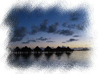 白んでいく空 |
|
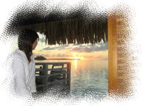 バンガローからの朝日 |
窓から見える海の向こうに、広がる朝焼け。 そこからだんだんに、太陽が姿を見せ始めます。 昨日のマティラビーチに沈む夕日もきれいだったけど、 バンガローから見える今日の朝日も、すばらしいです・・。 |
| 身支度をして、最後の朝食。 今日ももりもり食べるぞ！と思ったのだけど、 朝からなんだかおなかの調子が・・・(T_T) フルーツを少し食べただけで、あとは残してしまいました。 昨日食べ過ぎたのがよくなかったのか、 何かにあたってしまったのか・・。 昨日までは、とっても調子よかったのに～。 ほぼ同じものを食べているはずのひでくんは平気そう。 （この先、時折おなかレポートが入りますがご了承ください。。） |
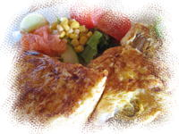 朝食 |
|
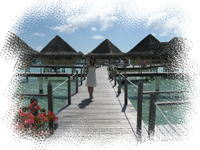 とてもいい天気♪ |
朝食が終わると、ビーチをお散歩して、 お土産用に、貝殻やサンゴのかけらを拾いました。 あと、ビーチの砂も。 今日は、なんとこの旅行中で一番のいいお天気です。 これから帰るなんて、なんだかくやしいなあ。。 |
| 部屋に戻って、急いで荷造り開始です。 私がある程度まで袋詰めすると、 ひでくんが、スーツケースにあわせてパッキングしてくれます。 ひでくんは、旅行中、めきめきとパッキングの腕を上げ、 帰国する頃には、すっかり名人になっていました。 私は、すっかりお任せ状態です・・(;^-^A |
| でも、荷造りが予定より遅れてしまい、 ポーターさんがスーツケースを取りにきたときには まだ、詰め終わってませんでした。。 ５分後にまた取りに来てもらうことに。ごめんなさ～い。。 |
| 荷造りを終えて、無事ポーターさんにスーツケースを預けると、 フロントでチェックアウト手続きです。 明細を確認したところ、 ディナーの追加料金は請求されておらず、 なんと昨日のワイン代も、入っていませんでした！ サービスなのか、付け忘れなのかわからないけど・・ラッキ～☆ |
| 明細を確認したところで、私のおなかがまたゴロゴロ・・・。 精算をひでくんに任せて、トイレへ。。 これから移動なのに、困ったなあ。。 |
| トイレから戻ると、チェックアウト手続きを終えたひでくんが待っていました。 ホテルの船着場から、クルーザーで移動だそうです。 予定時間を遅れてしまったので、急いで船着場へ行くと、 同行のゲスト（日本人カップルが２組）はもうみんなクルーザーに乗っていました。 |
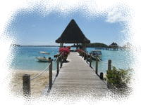 船着場 |
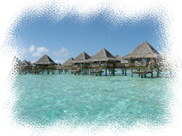 快晴のインターコンチ |
クルーザーに乗るときに、貝殻のネックレスをもらいました。 貝殻のネックレスは、これで計４つです。 ホテルからのお土産はどこもこれなのかな。 私たちが乗り込むと、いよいよ出発です。 そういえば、今日も日本人スタッフさんを見かけなかったな。 |
| 空港までは、ホテルボラボラに向かったときと反対側、 アナウ側を通って島半周のクルージングです。 一組のカップルは、クルーザーを操縦させてもらってました。 いいなあ。 私たちは、ずっとデッキで周りの景色を眺めていました。 海風が気持ちいい～。 左手に見えるオテマヌ山は、一部が雲に隠れていることが多かったけど、 今日は、山の形がはっきり見える。今までで一番いい眺めです。 ２０分くらいで、ボラボラ空港に到着しました。 |
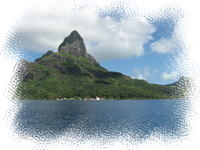 オテマヌ山 |
| 空港に到着すると、チェックインカウンターに スーツケースを預けます。 係員さんがスーツケースの重さを量ると、 スーツケース２つで、５０キロ近く・・。 規定だと、１つあたり２０キロまで。かなりオーバーです。。 超過料金とられちゃうかな・・とドキドキしていると、 係員さんがふたりでなにか相談しているようでしたが、、 結果、ＯＫとなったようです。よかったあ。。 |
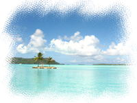 空港付近の海 |
| 記念撮影(BestShot?) | チェックインが終わると、飛行機出発まで１時間ほど時間があったので、 空港の外を歩いてみました。 とってもいいお天気だったので、建物の中にいるのはもったいない。 クルーザーが到着した船着場のあたりや、ちょっと裏手の砂浜とか。 ここでも写真を撮ったけど、これが、とてもいいかんじ！！ この旅一番のベストショットかも。。 |
| 出発３０分前くらいに、出発ゲート前に移動します。 帰りの飛行機は、右側の席をゲットせねば！ やはり、ファアア行きの便についてもゲートに入れるのは１０分前からで、 それまでは、どこのゲートから入ることになるのか分からない状況です。 しかしっ！私たちは、行きの便で学習していたのです。 出発ゲートがどこになるかは、先に係員に直接聞いちゃえばいいってことを！ （・・って、そんな大げさなもんじゃないけど。。） 私はチェックインカウンターへ行って、係員にファアア行きの出発ゲートを尋ね、 １番ゲートであることを教えてもらいました。 そして、１番ゲート前でさりげなく待機。 搭乗手続きが始まると先頭から２組目くらいに入ることができ、 無事、右側の席をゲットすることができました。 |
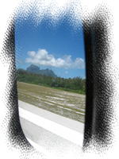 右側の席 |
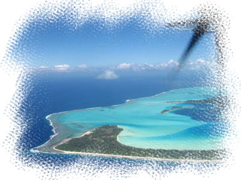 さよならボラボラ |
とうとう、ボラボラ島とお別れのときがきてしまいました。 飛行機が飛び立つと、島の東側を旋回し、 どんどん島が遠くなっていきます。 さようならボラボラ島。 またいつか、この島に来ることができますように・・。 そのときは、どうかこのままの美しい島でありますように・・。 |
| 飛行機は１時間ほどで、ファアア空港に到着しました。 タヒチ島も、すこぶるいいお天気です。 空港建物に入ると、到着ロビーで荷物が運ばれてくるのを待ちます。 別な便も入ってきたせいか、だいぶ待たされました。 その間に、またおなかの調子が・・。 飛行機で出されたジュースを飲んだせいかな。 何かおなかに入れるとだめみたい・・(+_+) |
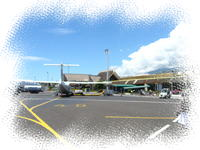 ファアア空港 |
| スーツケースを受け取りロビーを抜けると、 （特に受付もなにもなく出れる） タヒチヌイトラベルの方が待っていました。 タヒチ島での滞在ホテルごとに集められて、車で送迎となるようです。 私たちが泊まるシェラトンホテルタヒチは空港に近いせいか、 人数が一番多かったです。 |
| ワゴン車に乗って５分くらい、１２時半ころに、シェラトンホテルタヒチに到着しました。 ここは、けっこう大きなリゾートホテルです。 チェックインの手続きをすると、 部屋に入れるようになるまで、ロビーで待ちます。 歩き回る余力もなく、ロビーのいすに座って、 これから購入するおみやげリストを作っったりしていました。 |
| 部屋に案内されるのは１時～１時半くらい、といわれたけど、 １時ちょっと前くらいに部屋に入ることができました。 部屋は、ロビーと同じ階の、ラグーンスーペリアルームでした。 景色は微妙で、窓から海が見えるか見えないか・・ぐらいなかんじ。 まあ、デイユースで休むだけだからこんなもんかな。 ペットボトルのミネラルウォーターをもらいました。 |
| スーツケースを開けて、動きやすい服装に着替えます。 そしてお昼ごはん。 私はとてもごはんが食べれる状態ではなかったので、 ひでくんは、持参したカップ麺でちゃちゃっとお昼ごはんすることにしました。 荷物も減らしたいしね。 どんべえのきつねうどんで、ちょっと日本の味が恋しくなったようです。 |
| でかける支度ができると、パペーテでお買い物です。 パペーテまで、ル・トラック（トラックを改造したバス）に乗ることにします。 ホテル前の道路の向かい側から乗れるようなのですが、 停留所がどこなのか、よくわかりません。 ル・トラックが通ったら手をあげれば停まってくれるそうなので、 パペーテの方向に歩いてみます。 少し歩いたところでル・トラックが通りかかり、 止めて乗り込むことに成功。 降りるときは、降りたいところでブザーを押すと停まってくれるようです。 パペーテは終点なので安心だけど、帰りはだいじょうぶかな。。 |
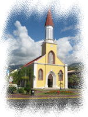 パペーテの教会 |
１０分くらいで、ル・トラックは終点パペーテに到着です。 まずは、「マルシェ」にいってみましょう。 「マルシェ」は、大通りから１ブロック入ったところにある２階建ての市場です。 １階が、花や魚、果物や、かごバッグなどのお土産の店が並んでいます。 建物の周りにも、たくさんの出店が出ています。 花屋には、ティアレのつぼみの袋詰めとか、南国っぽいアレンジフラワーが並んでいました。 お土産の店を通りかかると、早速タヒチアン店員につかまっちゃいました。 あれこれ勧められて、石鹸や紅茶の香りをかがされます。けっこう押し強いです。。 とりあえずざっと見て、値段のチェックをして、２階へ。 ２階には、パレオや貝殻アクセサリーや木彫りのあやしい人形などのお土産雑貨系の店が並びます。 ３時くらいには閉まる店が多いようなので、急いで決めて買ってしまわないと。 ２階では、ココナッツ石鹸とティアレ香水、１階では、紅茶とバニラコーヒーを買いました。 （ココナッツ石鹸は、１階の方が安かった） マルシェはなんだか湿気が多い気がしたので、ここではクッキーは買いませんでした。 （なんとなく、ですが・・） １階では、さっきの押しが強い店員の店で買ったのだけど、 おまけで小さな石鹸と、貝殻のネックレスをもらいました。 特に値切らなかったけど、ディスカウントはしてくれるのかな～。 結構買ったから、チャレンジしてみてもよかったかも。 |
| 次は、「ヴァイマショッピングセンター」へ。 ”ショッピングセンター”というので、 １つのビル内にテナント店が入っているショッピングビルを 想像していたのですが、ちょっと違っていました。 表に階段やエスカレータがあり、 真ん中が吹き抜けになっていて、まわりに店がならんでいます。 それぞれの店の大きさも配置もけっこうばらばらです。 閉まっている店も多かったけど、 お土産や真珠の店は開いていました。 |
| 最初に入ったのは、２階（たぶん・・）にある、「Lisa」というお土産やさん。 あまり大きくはないけれど、定番のお土産はだいたいそろっていて、値段も、マルシェと同じくらい。 紅茶は、マルシェより安かった～。こっちで買えばよかったな～。 お土産購入店候補として、３階へ上がってみる。 ３階には、タヒチヌイトラベルのラウンジがありました。 日本人スタッフもいるそうなので、寄ってみることにします。 |
| ラウンジに入ると、初日にファアア空港で会った日本人スタッフさんがいました。 他にお土産やさんがないか、ヒナノビールが買えるお店がないか、などを尋ね、 教えてもらいました。 あと、ここで荷物を預かってもらうこともできます。 （ラウンジは６時までなので、それまでの間のみ） マルシェで購入したお土産を預かってもらい、再びお店を探索します。 ラウンジで教えてもらった免税店（１階）で、ヒナノビールをゲット。 ここは缶ビールのみでした。 |
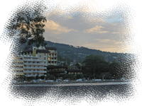 パペーテの町並み |
| ここで、「マルシェ」に戻って、やしの葉で編んだかごバッグを購入しました。 さっき行ったときに気になったのだけど、買いそびれてしまったので。 ２階や、１階の食品系のお店はほとんど閉まっていたけど、１階のお土産やはまだ開いてました。 そして再び、「ヴァイマショッピングセンター」へ。 お土産やさんもいくつか見たけど、はじめにいった店「Lisa」の方が安かったので、 そちらに戻って、クッキーなど残りのお土産をまとめ買いしました。 あとは、タヒチヌイラウンジの隣の雑貨屋さんで、タパ（木の皮）でできた写真立てをゲット。 これで、決めていたお土産購入もほぼ完了です。ふぅ。。 |
| さすがに歩き疲れたので、ラウンジで休憩させてもらいました。 私のおなかはだいぶ落ち着いていたけど、 水分もあまりとらないようにしていたので、 おなかはすっかりからっぽ、ふらふらです・・。 晩ごはん、食べれるかしら・・。 |
| ５時半くらいになったので、ルロット（屋台）がある海岸沿いの広場へ。 広場には、屋台が並び、開店の準備中です。 開店まで、港をぶらぶら。 港には、ボラボラ島で見かけた豪華客船「PAUL GAUGUIN」号が停まっていました。 タヒチ島に戻ってきていたんだね～。 |
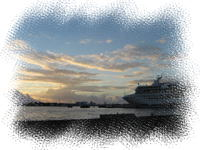 PAUL GAUGUIN |
|
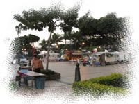 準備中のルロット |
パレオや貝殻アクセサリーなどを売っている出店も出ていました。 品は、ボラボラ島のヴァイタペで行ったお店と同じようなかんじです。 パレオは、ボラボラ島で買ったのとほぼ同じ柄のがありました。ちょっとがっかり。 |
| ６時を過ぎたので、今日の晩ごはんを食べる店探し。 中華にしようと思っていましたが、中華でも３～４店くらいありました。 その中から、割と混んでいた「CHEZ MAMY」に決定！ |
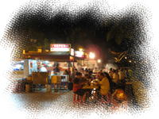 にぎやかなルロット |
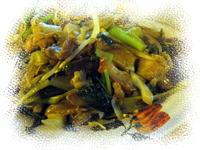 シャオメン |
ちょっと待って、店の脇にでているテーブルに通されました。 シャオメン（焼きそば）とパイナップルジュースをオーダー。 私がおなか壊してなければ、もっといろいろ食べてみたかったのだけど。。 パイナップルジュースは、１リットルのパックがそのままでてきたので ちょっとびっくり。。 シャオメンは、醤油ベースのあんかけ焼きそばで、まあまあおいしかったです。 おなかも大丈夫そう。。 |
| 荷造りが待っているので、ホテルに早めに戻ることにします。 ル・トラックに乗ろうと、停留所（来たときに停まった停留所の向かい）へ。 でも、２０分以上待っても、ル・トラックは来ません。。 反対方向のは４台くらい通っているのになあ・・。 こちら側だけ来ないのはなぜなのかよくわからないけど、 ガイドブックにも土曜の夜は本数が少ないと書いてあったので、 ル・トラックに乗るのはあきらめ、ショッピングセンター前から タクシーを拾いました。 タクシーだと、ホテルまで1000フランです。 |
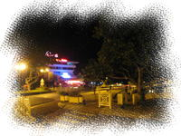 夜のパペーテ |
| ホテルの部屋に戻ると、まずシャワー。 と、ここでアクシデント発生。。 シャワーがいうことをきかず・・、めいっぱいお湯を出した状態で 急にドア側にシャワーがくるりとまわり、 洗面所が、洗面台も床も水浸しになってしまいました・・。やばい。。 あわてて床にバスタオルをしいて応急処置。ふう。。 |
| 部屋にバスローブやスリッパはありませんでした。 デイユースだからかなあ。 シャワーを出ると、ひでくんが着々と荷造り中。 スーツケースの厚みやスペースに合わせてきっちり詰められていく荷物。 ひでくんは、もうすっかりパッキング名人に。すごい！ 私は・・、感心して見ているばかり・・。ごめんなさいです。。 今回は、ポーターさんが来る前に荷造りが無事完了！ チェックアウトの時間にはまだ早いけど、余裕をもってすぐチェックアウトしちゃいました。 |
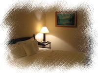 お部屋のベッド |
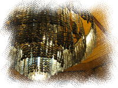 貝殻のシャンデリア |
ホテルチェックアウトはとても混み合うと聞いていたのだけど、 まだあまり人はいなくて、チェックアウトはあっという間に完了。 出発時間まで１時間くらいあるので、ロビーの椅子に座ってひとやすみ。 するとなにやら音楽が聞こえてきたので、音のするほうへ行ってみます。 途中で「Wedding Party」の案内があったので、結婚式かなと思ったけれど、 レストランで演奏会（ショー？）をしていました。ステージで踊ってる人もいました。 |
| 椅子に戻ってまったりすると、眠気が・・。 寝過ごしそうなので携帯のアラームをセットすると、ふたりともあっという間に爆睡状態・・。 ２２時くらいになって入り口がざわざわし始めたので、 あわてて近くに行ってみると、他の旅行会社の人たちでした。 フロントの方は何人かチェックアウトの列はできていたけど、 それほど待たなくても手続きは終わりそうな雰囲気でした。 そのまましばらく待っていると、隣のひでくんが調子悪そう・・。 私のお腹がようやく治ってきたと思ったら、次はひでくんが腹痛のようです・・。 シャオメンがあたったのかなぁ。（私は平気だったのだけど・・） |
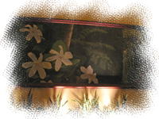 ティアラを描いた巨大な絵画 |
| ようやく、タヒチヌイトラベルの赤いワンピを着たガイドさんが到着。 点呼をとりながら、みんなに貝殻のネックレスをプレゼント。 でもネックレスが絡まって困っていたみたい。大きい貝がついているから絡まりやすいのかな。 私たちも１本ずつもらって、貝殻ネックレスが全部で７本になりました。 こんなにたくさん、帰ってから使うんだろうか・・・。 |
| 荷物が先に荷物用の車に積み込まれ、人は大型バスへ。 バスはほぼ満席でした。いったい何人いるんだろう。 バスは空港に出発し、移動中に出国方法の説明を受けます。 タヒチでは立って車に乗ってはいけないらしく、バスの中でガイドさんがが座って説明していました。 車の荷台に乗っても怒られないのに、ちょっと不思議。 |
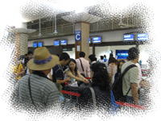 待ち行列 |
空港に到着すると、チェックインカウンターに長蛇の列が・・。 いろんな旅行会社の送迎が集中して到着したからなんだろうけど、 もうちょっとなんとかならないのかなあ・・？旅行会社によって時間をずらすとか。 待っている間、ひでくんはお腹が痛くてぐったりしています。だいじょうぶかなあ・・。 ガイドさんに言うほどでもない、とひでくんは言うけど、心配です・・。 やっと順番が回ってきて、チェックインの手続きをします。 荷物の重さは２つで48.9kg。来たときよりちょっと重い・・。 重量オーバーにはならなかったみたいで安心したけど、いつもながら荷物多すぎです。 なんとかしないとね・・・。 結局、並び始めてからチェックインが終わるまで、１時間くらいかかりました。 |
| 出国手続きの前に、おみやげ屋さんをチェック。 値段は、空港価格でちょっと高めです。 ビンのヒナノビールが欲しくて探したのだけど、缶のしか売っていませんでした。 タヒチヌイトラベルの方に聞いてみたところ、おみやげ屋には置いてなく、 カフェテリアならあるかも、とのこと。 そこでカフェテリアに行き、冷え冷えのビンヒナノをゲット。 （うちでのディスプレイ用なので、冷えてないのがよかったんだけどね。） その後、出国手続きをします。 ここでパスポートと航空券を渡し、出国カードを提出します。 次は手荷物のセキュリティチェック。 身に付けている物を籠に入れ、さらに靴も脱いでX線で検査されます。 機内でのリラックス用にと、５本指靴下を履いていた私たち夫婦。 靴脱ぐなんて聞いてないよ～。ちょっぴり恥ずかしかった。。 |
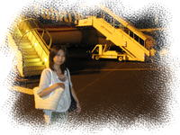 いよいよタヒチにお別れ |
搭乗開始まで、待合室に座って休憩。 おみやげ屋ものぞいてみたけど、特に変わったものもなく、やっぱり空港価格でした。 休んでたら、またふたりで爆睡・・。気が付いたらすでに搭乗開始していました。 あわてて移動・・、でも飛行機バックで記念撮影するのは忘れず。 飛行機に乗り込むと、チケットにかかれている座席にすでに人が座ってる？ 聞いたら席を間違っていたようで・・。あわてて通路側に移ってくれました。 席についたら、ねむねむ・・(∪。∪)。。。zzzZZ 帰りはふたりともどっぷり疲れていたし、さすがに今度は機内でも眠れました。 |
| そして、無事日本に帰ってきました。 成田から京成線、新幹線を乗り継いで、仙台の我が家に到着です。 日本（仙台）もきれいに晴れていたけれど、空の色はタヒチとは違って見えて。 でも、この空は、遠い遠いあの島とつながっているんだね。 空を見上げて、なんだかとても感傷的になってしまいました。 またいつか、ボラボラ島を訪れたいと思います。 たくさんの想い出をありがとう！ Mauruuru BoraBora！！ |
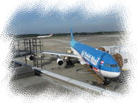 無事成田空港に到着 |
<< Previous Day ( 5thDay ) << ｜ top ( 6thDay ) ｜ >> Next Contents ( Souvenir ) >> |